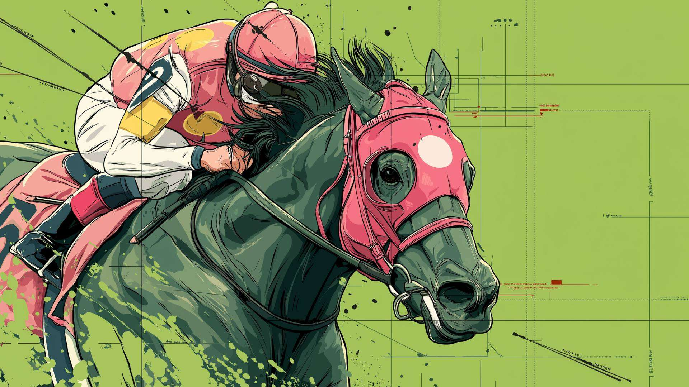
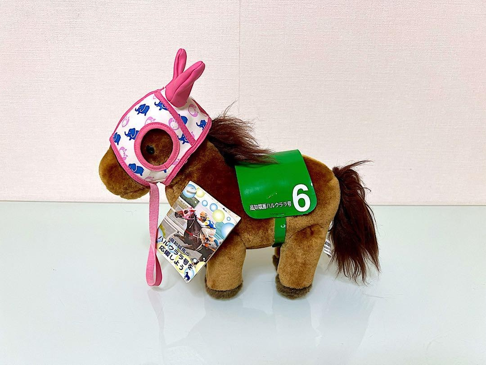
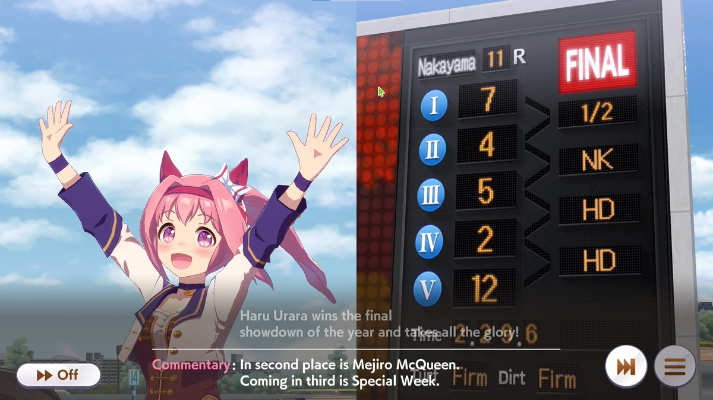

У Хару Урара светло-розовые волосы, собранные сзади в хвост, доходящий до середины спины.
У нее короткая растрепанная челка и красная повязка на голове, из-за которой ее длинные
локоны обрамляют лицо по бокам. На левом ухе у нее белый бант с пурпурными полосками по
краям. Ее большие круглые глаза ярко-розового оттенка, а радужки украшены отчетливыми
узорами в виде лепестков вишни.
Её гоночный наряд напоминает традиционную японскую спортивную форму; на ней очень
светлая, почти белая спортивная рубашка с темно-пурпурными полосками и темно-пурпурные
шорты с белой биркой на левой стороне. Поверх спортивной формы на ней надета спортивная
куртка, которая сочетается по цвету и акцентам с ее рубашкой. Рукава куртки заканчиваются
на предплечьях, а на руках у нее такие же пурпурные перчатки без пальцев. На ней светлые
носки в розово-белую полоску, которые заканчиваются ниже колен, и кроссовки на каблуках в
сочетании розово-белого и пурпурного цветов, что дополняет ее наряд. Наконец, у нее на
ногах три пластыря: один на правом бедре и два на левом.
В Uma Musume у всех лошадей есть украшение (обычно бантик) на одном из ушей. Бантик на правом ухе
означает, что настоящая лошадь была жеребцом, на левом ухе — кобылой. У Хару Урара бантик на левом ухе,
т.к. Хару Урара в реальной жизни действительно является кобылой.
Хару Урара никогда не участвовала в крупных гонках и за всё время на ней ездило много жокеев, поэтому
у нее нет одного единственного скакового шелка. Цветовая гамма ее наряда в игре на самом деле вдохновлена
маской, которую она носила в реальной жизни, - она была розово-белой с вкраплениями красного.
Маска Хару Урара
Ее владельцы также украсили маску наклейками Hello Kitty, чем вдохновенлен повседневный наряд Хару Урара.
Повседневный наряд Хару Урара
Поскольку у настоящей лошади на ноге были розовые и белые ленточки, Хару Урара в игре носит носки с
розовыми и белыми полосками.
Пластыри на ногах Хару Урара являются отсылкой на то, что настоящая лошадь продолжала участвовать в
гонках даже после многочисленных поражений
О Хару Урара
Хару Урара (27 февраля 1996, Мицуиси, Префектура Хоккайдо, Япония — 9 сентября 2025, Ондзюку,
Префектура Тиба, Япония) — японская кобыла, в прошлом участвовавшая в скачках. За время своей карьеры
(1998-2004) одержала рекордные 0 побед и 113 поражений подряд. В 2003 году её история была освещена в
японских СМИ, после чего Хару Урара стала известна по всей Японии как символ упорства и стойкости.
Имя на японском: ハルウララ
Происхождение имени: имя Хару Урара означает “прекрасная весна”.
История гонок: [0-5-7-101].
Интересные факты
Настоящая Хару Урара
Она проиграла все гонки, в которых участвовала, одержав 0 побед в 113 стартах.
Именно поэтому она была так популярна.
Она участвовала в девяти гонках, которые были названы в ее честь, но не выиграла ни одну из них.
Это также делает ее единственной лошадью в Японии, которая участвовала в забеге, названном в ее честь,
во время своей карьеры.
Хару Урара действительно выиграла забег после выхода на пенсию (софт-кейба), но это был забег с очень
сложными правилами, и обычно он проводится для лошадей, вышедших на пенсию.
Несмотря на то, что она проиграла много скачек, не она является лошадью, проигравшей больше всего
скачек в Японии. Были и другие лошади, которые проигрывали больше скачек до и после нее.

Игровая история Хару Урару была полностью выдумана, потому что настоящая Хару Урара никогда не была главной лошадью и
не участвовала ни в одной из гонок, показанных в ее игровом сценарии (даже в скачках по обмену, потому
что она никогда не была достаточно хороша, чтобы участвовать в них. Она даже не прошла квалификацию на
крупные призовые гонки в Кочи).
Настоящая Хару Урара — это лошадь, с которой трудно справиться. Она пуглива, ненавидила тренировки,
не любила людей и имела тяжёлый характер. Однако в гонках она всегда выкладывалась на все сто.
Она является одним из факторов возрождения ипподрома Кочи, получившего название "Бум Хару Урара".
Чтобы прорекламировать ипподром Кочи, репортер обратил внимание на Хару Урару, лошадь, которая
проигрывала все скачки, в которых участвовала, и решил написать о ней статью. На следующий день эту
историю подхватили национальные японские новостные телеканалы.
Вскоре все собрались на ипподроме Кочи, чтобы увидеть Хару Урару. На нее делали ставки, а жены
жокеев начали делать мерч с ней.
Ставка на Хару Урару — это гарантированный проигрыш, поэтому люди стали использовать ее букмекерские
билеты в качестве талисмана удачи за рулем. 当たらない означает "не выиграть", но также означает
"не попасть в аварию".

Плюшевая игрушка Хару Урара
Мороженое, которое Хару Урара держит на своей SSR-карточке похоже на то, что продается на ипподроме
Кочи.
Причина, по которой она была выбрана одним из персонажей, получивших новогодний альтернативный
костюм заключается в том, что японцы обычно называют новый год “новой весной”, что напоминает о
значении имени Хару Урара.
Альтернативный костюм Хару Урара "Хатсу Урара♪Саку Сакура"
Она остается единственным персонажем в игре, основанным на скаковой кобыле с беговым стилем,
ориентированным на грунтовое покрытие.
Хару Урара является одним из немногих персонажей в игре, который улыбается и машет зрителям, даже
если занимает не призовое место в конце гонки.

Хару Урара является слабейшим персонажем в игре с самыми низкими характеристиками, что вполне соответсвует
истории гонок настоящей лошади.
В игре в режиме карьеры первые три задачи Хару Урара после ее дебютной гонки — привлечь достаточное
количество болельщиков, что достигается только частым участием в гонках, что основано на том, что
настоящей лошади действительно приходилось очень часто принимать участие в скачках.
В режиме карьеры её последней задачей является участие в гонках Арима Кинен. Для выполнения
задачи достаточно занять любое место. Более того, эта гонка отличается от других в режиме карьеры
Хару Урара и не подходит её беговому стилю, ориентированным на грунтовое покрытие, предполагая проигрыш
игрока, что так же отсылает к череде поражений настоящей лошади.